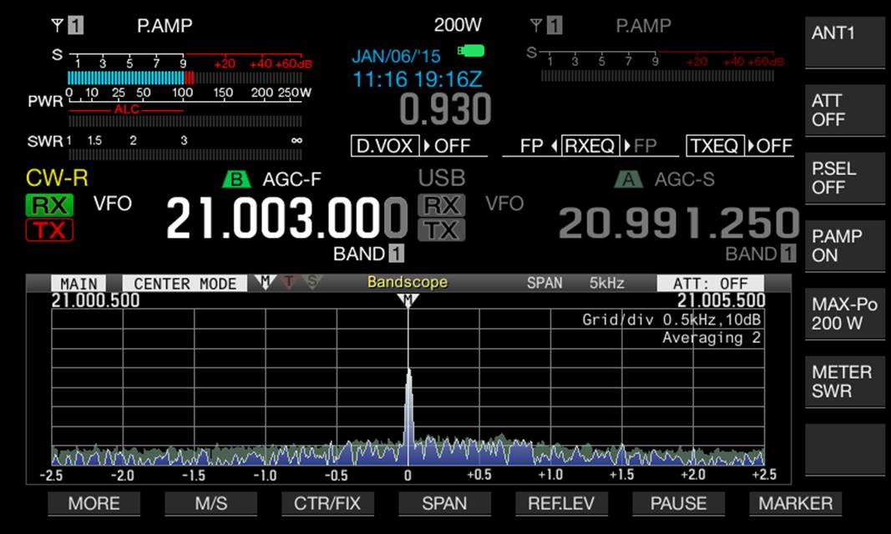

It is loud and clear here in San Jose by 85/17 highways. I can’t get a bearing on it due to very strong QSB varying from S3 to+15dB over S9. But seems to be somewhere between NW-N-NE. A screen capture with a 5Hz I see no sidebands. Clean, strong but amplitude varies as if someone was moving a matching network tuning control. Opening up to 100Hz span do I see a brother at 21.021.770? That one might have been there before. I never seen this signal before… Bob – W6OPO  From: Chat1 [mailto:chat1-bounces@ncdxc.org] On Behalf Of Ross Forbes via Chat Can anyone else hear the carrier on 21.003? It’s S7 at my place in San Jose and appears to be coming from the northern direction. It was on most of the morning on January 5th, but went off sometime in the afternoon. It’s back today. On January 5th, it was also transmitting some garbage sidebands. Just curious what it might be. 73, Ross K6GFJ |